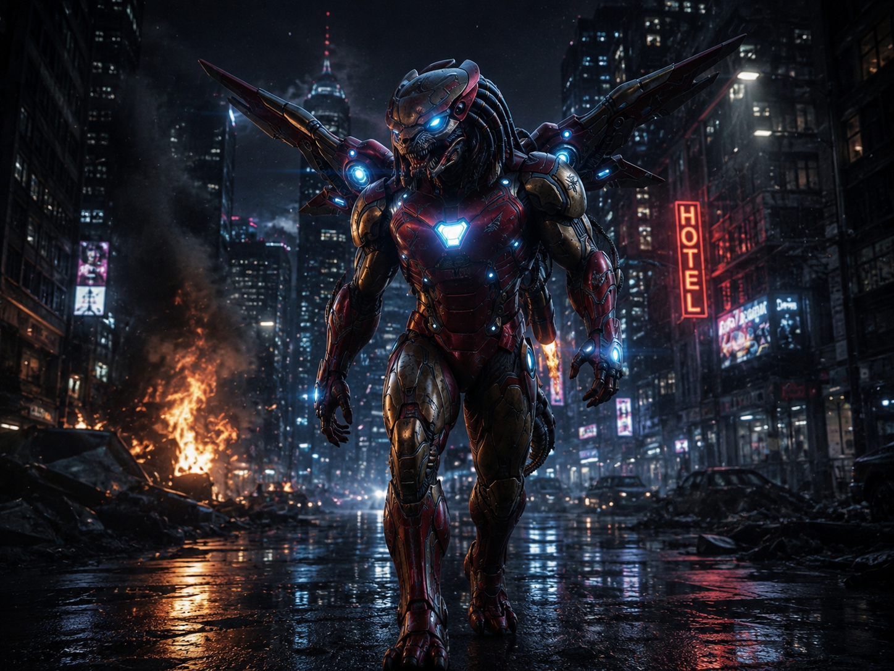
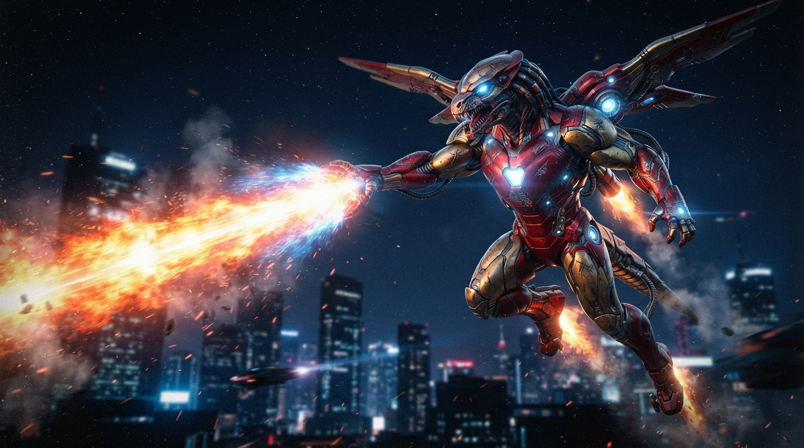
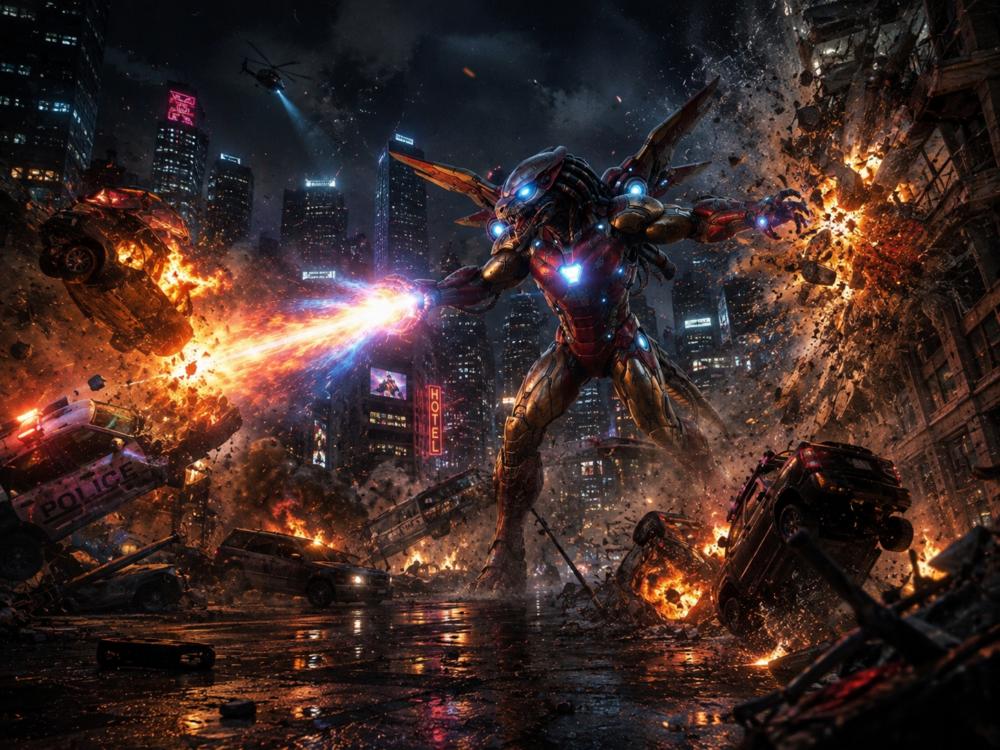
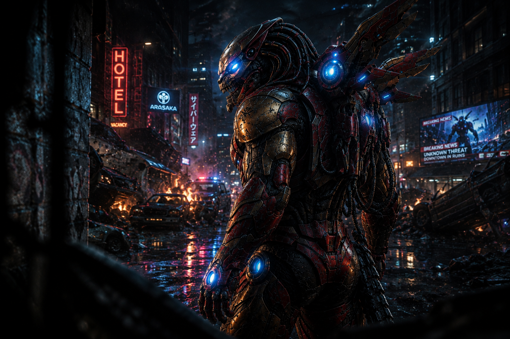
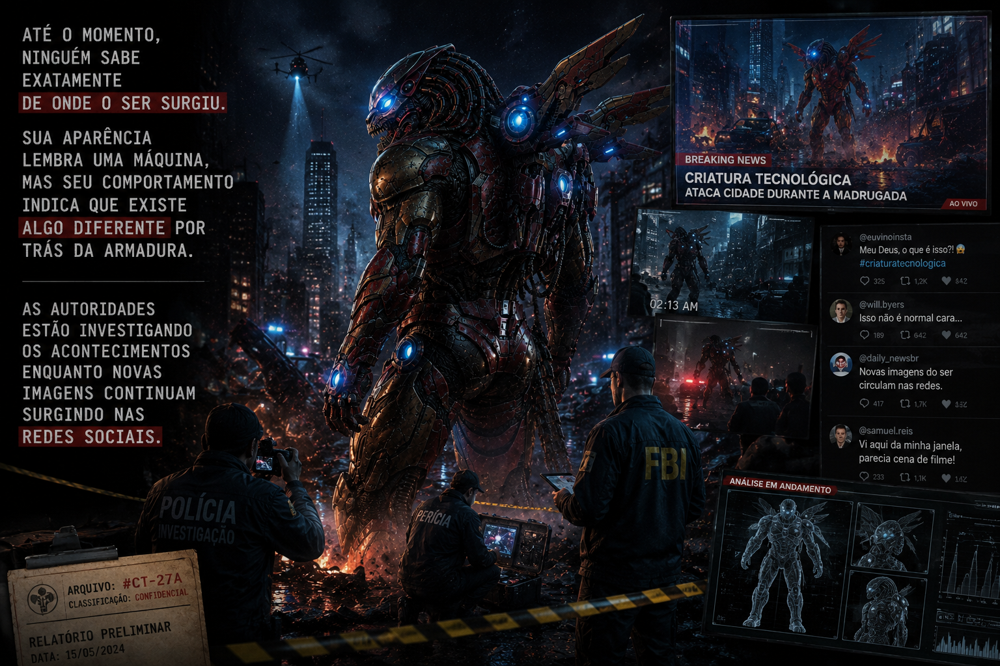
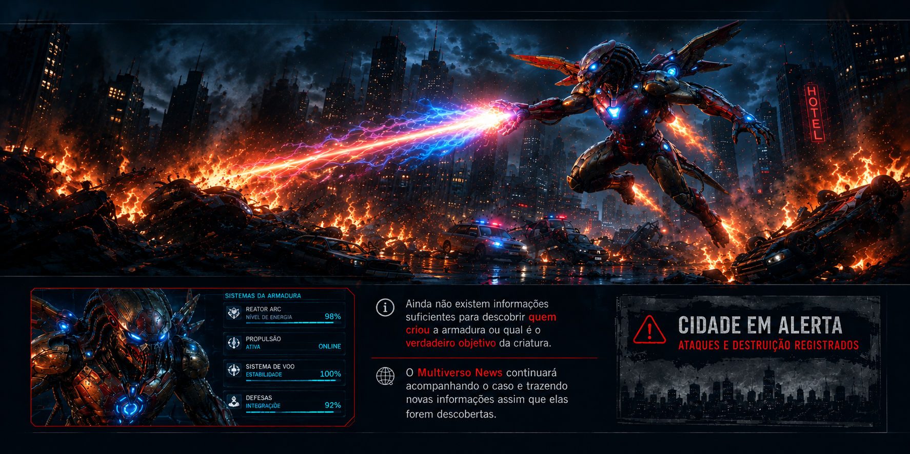

AVISTAMENTO
Moradores relatam criatura voando sobre a cidade
Diversas pessoas afirmam ter visto uma figura metálica voando durante a noite.
Leia mais →Notícias, acontecimentos e mistérios do universo

Uma criatura desconhecida foi vista utilizando uma armadura metálica capaz de disparar rajadas de energia. Testemunhas afirmam que o ser utilizou os poderes para atacar a cidade.
Ler matéria
Diversas pessoas afirmam ter visto uma figura metálica voando durante a noite.
Leia mais →
A criatura teria utilizado uma espécie de energia para destruir veículos e estruturas.
Leia mais →
Especialistas tentam descobrir de onde veio a tecnologia utilizada pela criatura.
Leia mais →
alt="Investigação sobre a criatura" />Até o momento, ninguém sabe exatamente de onde o ser surgiu. Sua aparência lembra uma máquina, mas seu comportamento indica que existe algo diferente por trás da armadura.
As autoridades estão investigando os acontecimentos enquanto novas imagens continuam surgindo nas redes sociais.
A criatura consegue disparar grandes quantidades de energia através das mãos.
O sistema da armadura permite que o ser se movimente rapidamente pelo ar.
A estrutura metálica aumenta sua resistência e capacidade física.

O aparecimento da criatura chamou a atenção de especialistas em tecnologia. A armadura apresenta sistemas capazes de produzir energia e permitir que o usuário voe.
O mais preocupante, segundo testemunhas, é que a criatura não parece utilizar seus poderes para proteger as pessoas. Pelo contrário, os ataques indicam que ela pretende causar destruição.
Ainda não existem informações suficientes para descobrir quem criou a armadura ou qual é o verdadeiro objetivo da criatura.
O Multiverso News continuará acompanhando o caso e trazendo novas informações assim que elas forem descobertas.